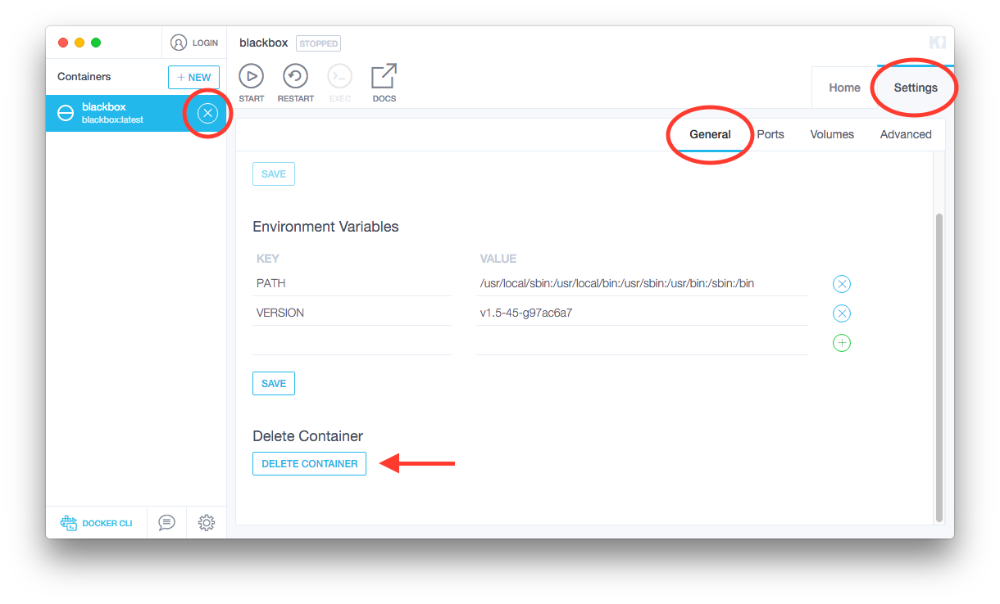
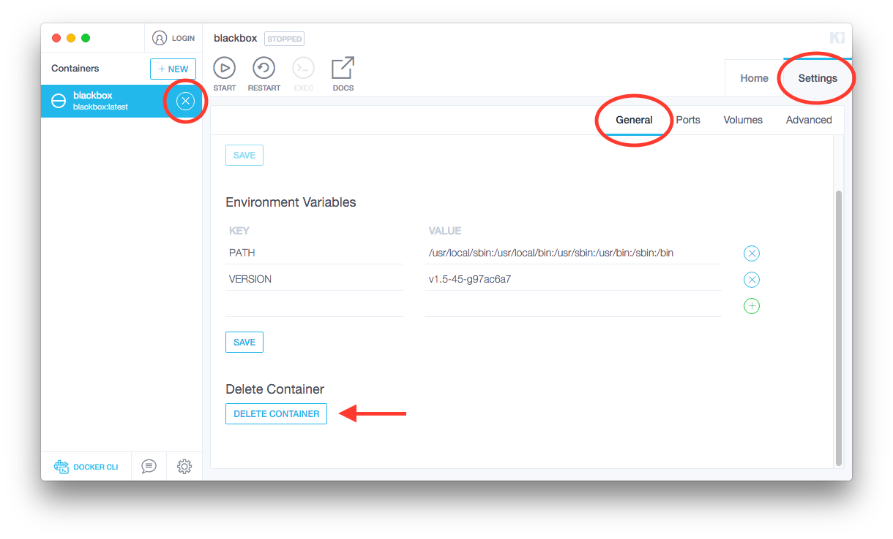

更新與移除
要更新 1Album 黑盒子，必須把現有的黑盒子刪除再重新安裝。只要 /data 目錄指向的檔案夾不變，重新安裝後的黑盒子內容就不會改變，也不需要再次連結帳號。
刪除黑盒子，可以將游標指向下圖左邊圈起的地方，點 X 按鈕來刪除。也可以進入 Settings 裡的 General 畫面最下面，點 DELETE CONTAINER 來刪除。

刪除後，再依照 安裝指南 重新安裝黑盒子。
要更新 1Album 黑盒子，必須把現有的黑盒子刪除再重新安裝。只要 /data 目錄指向的檔案夾不變，重新安裝後的黑盒子內容就不會改變，也不需要再次連結帳號。
刪除黑盒子，可以將游標指向下圖左邊圈起的地方，點 X 按鈕來刪除。也可以進入 Settings 裡的 General 畫面最下面，點 DELETE CONTAINER 來刪除。

刪除後，再依照 安裝指南 重新安裝黑盒子。